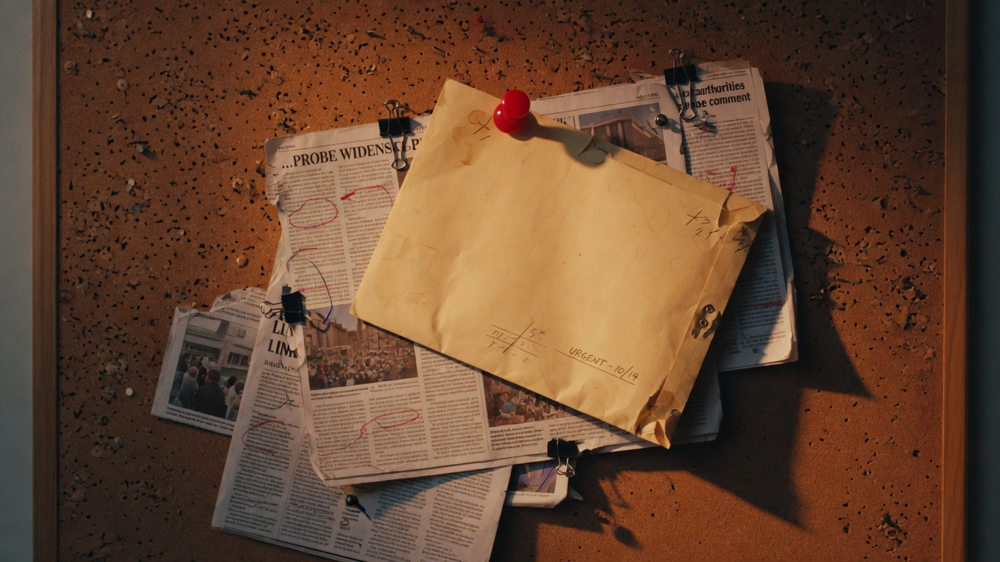
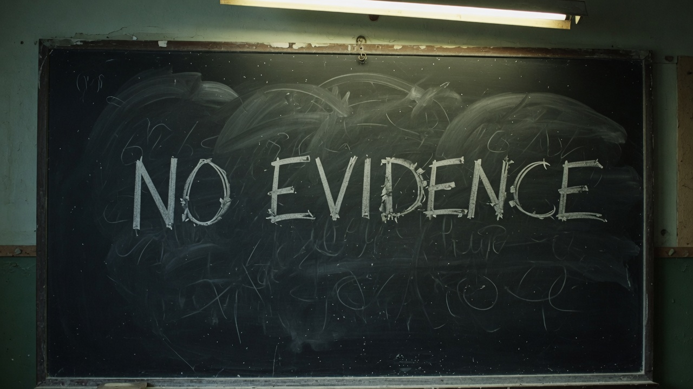

The Andriesz Paper Trail
FBI retention and review, a real CFTC enforcement action, HMRC's £96m tax dispute, the FCA's admitted PIDA error and its new Andriesz review—without turning missing causal receipts into facts.
Read investigation →Featured investigation
On December 7, 2007, a prosecutor asked to send prepared victim-notification letters. Two minutes 23 seconds later, Jeffrey Sloman replied “Hold the letter”; the public record still does not identify who he consulted.
Direct source access
The files host is GAH’s public utility gateway for source-oriented browsing, including the Photo Evidence Index and Media Index. Use the newsroom for editorial context; use the file host when you want to go straight to the underlying file indexes.

FBI retention and review, a real CFTC enforcement action, HMRC's £96m tax dispute, the FCA's admitted PIDA error and its new Andriesz review—without turning missing causal receipts into facts.
Read investigation →
The receipts narrow the 2015 Putin claim—and document a stronger 2018–2019 chain from Epstein’s introduction to a London meeting and Barak’s Qatar security proposal.
Read investigation →
Sworn allegation, categorical denial, dated 2010–2015 contact records and a namesake search collision—resolved into separate evidence classes instead of one inflated name count.
Read investigation →
The 2011 first-dinner logistics now join cleanly to Gates’s testimony and the 2013 exit-negotiation record—while self-addressed drafts remain drafts.
Read investigation →
Southern Trust’s contract language names Gates inside a defined group. The receipt stops short of proving engagement, payment or services.
Read evidence brief →
The viral theory was tested against surrounding primary records. The reviewed examples resolve into food, kitchen logistics and banter—not an authenticated hidden codebook.
Read evidence brief →
Defense access was extensive; victims were not comparably consulted before the NPA was signed. The record supports an access asymmetry—not a corruption finding.
Read investigation →
A 2025 FBI email explicitly says a scrub found Epstein-associated records outside a 50D file because the sender considered them not of evidentiary value.
Read evidence brief →
SDNY received serious allegations in 2023. On June 12 it said it had not opened an investigation and was deconflicting with DANY.
Read investigation →
A privilege-log entry identifies about 57 withheld documents concerning an ongoing investigation of “Defendant and others” without identifying the others.
Read investigation →
The released record shows two poster identities. The public bundle does not prove Roberto Grijalva authored either one.
Read evidence brief →
The documents establish pieces of biography. The bridges from those documents to the extraordinary allegations repeatedly failed verification.
Read investigation →
DOJ released three Deutsche-linked FBI interviews. A separate FBI chain shows a planned Paul Morris proffer whose public follow-up remains unresolved.
Read investigation →
Brende says he first met Epstein in 2018. Norway’s parliament tested that timeline against a 2017 email whose unnamed friend is still unresolved.
Read investigation →
The settlement payment is documented; later records show the certificate-transfer mechanics were still being repaired years later.
Read investigation →
Evidence brief
Southern Financial's $1M subscription is proven. The recovered record does not support assigning that capital to a specific portfolio company.
Investigation
TrueSec and IL Energy share a 50/50 legal template—but their approvals point to Guardicore and a natural-gas power-station MOU, not one merged company.
Investigation
Four source-locked deal paths separate recurring legal/bank execution from investment selection—and one never-funded deal provides the negative control.
Investigation
The same three-asset sale was repriced by $12.5M before closing, then reallocated again inside the unchanged $5.5M total.
Investigation
July 19–31, 2007: paused target letters, a two-year state-plea decision, and the first NPA term sheet—while the exact rationale for two years remains undocumented.
Investigation
A July 2015 Cycurity election-influence proposal sits beside a documented Barak investment-diligence trail. The archive does not show a campaign deployment or a completed Barak investment.
Investigation
Seven source records show recurring scheduling, calendar, call, and invitation logistics—without turning proposed contact into claims about attendance, influence, or misconduct.
Investigation
Financial Trust's 2005–2012 ESW investment reconstructed from entry, bank-settled follow-on, 6.1% ownership, and economic exit.
Evidence brief
The executed contract proves the advisory framework and contingent compensation terms—not that the options, referral fees, or customer introductions were ever realized.
Evidence brief
A public NG911 link becomes a record of prospective FCC outreach—not proof of completed meetings or a later customer-access chain.
Evidence brief
A 2016 financing reached signed-term-sheet stage, then stopped: Epstein declined and no funded closing is recovered.
Evidence brief
Southern Trust’s Deutsche account *9244 funded a matching $1M ERGO/Reporty transaction. The exact final holder and share count remain separately bounded.
Evidence brief
Two funded 2013 closings resolve from bank execution to an executed purchaser schedule and resulting preferred-share ownership.
Evidence brief
Spotify's $1M Ventures I route precedes its listing; the recovered $10M TME/Ventures IV funding lands after TME was already public.
Evidence brief
$99,999.74 went out; $322,491.13 came back across recovered bank records. The underlying company is still unknown.
Evidence brief
The original purchase wire is missing, but a $3.001M cost record and three matching $15M exit credits reconstruct the economic interest backward.
Evidence brief
Three Southern Financial subscriptions resolve through Kyara II, III and IV into three operating technology companies.
Evidence brief
Overlapping administrators and one Deutsche Bank relationship are documented. A shared account or traced technology-investment-to-Butterfly payment chain is not.
Evidence brief
A $5.5M ESW/AP package, final allocation, and $5,500,030 bank receipt converge on one November 2012 transaction; the extra $30 remains open.
Investigation
Why victim-notification letters were ready — and then held.
Investigation
Legal battles over evidence access and public transparency.

Evidence brief
A closer look at what the record actually shows.
Archive scope
Those are different numbers on purpose. The indexed corpus is the broad research layer used to locate and test leads; its index count is not presented as a count of unique primary-source files. The curated public evidence layer contains the files GAH has surfaced for reader verification; the curated public evidence layer contains the files GAH has surfaced for reader verification. Source mirrors, OCR/transcript derivatives, working artifacts, and preservation copies are not added together to manufacture a larger public-document count.
Our work is survivor-centered. We protect identities, context, and dignity in everything we publish.
Our commitment →